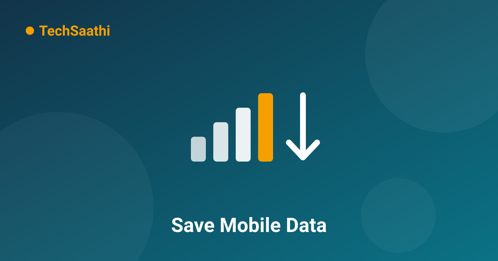

12 Easy Ways to Save Mobile Data — Cut Several GB Every Month

Data finished on the 20th and you're stuck waiting for the month to reset — a story almost every smartphone user knows. But here's the thing: your everyday apps quietly consume most of your data without you ever noticing. In this article, we'll show you 12 settings and habits that can save you several GB every month — no extra apps needed, and no giving up the internet.
1. First, Find Out Who's Eating Your Data
Go to Settings → Network → Mobile data usage (or Data usage). You'll see a full list of which app used how much data. Most people get a shock here — the app they barely use is often the biggest consumer.
2. Turn On Data Saver Mode
Settings → Network → Data Saver — turn it on. Background apps get heavily restricted, and only the app you're actively using gets full data. One toggle makes a big difference.
3. Enable Lite Mode in Chrome
Chrome → Menu (⋮) → Settings → Lite Mode (Data Saver) — turn it on. Google's servers compress websites before they reach you, cutting browsing data usage by 30-40%.
4. Turn Off WhatsApp Auto-Download
The biggest hidden data eater — WhatsApp! Go to Settings → Storage and data:
- Under "When using mobile data", keep only Photos (or turn everything off)
- Turn video auto-download completely off on mobile data — forwarded videos alone can eat gigabytes
- Under "When connected on Wi-Fi" you can leave everything on
5. Lower YouTube Video Quality
A 10-minute video at 720p or 1080p consumes 100-200MB. 360p is enough on a phone screen — open YouTube's settings → Video quality preferences → choose "Data saving". We cover the full method in our YouTube data-saving guide.
6. Restrict Background Data for Individual Apps
Settings → Apps → select the apps that consume data in the background (Amazon, Flipkart, news apps and so on) → "Mobile data" → turn off "Background data". Their notifications may arrive a little late, but your data stays saved.
7. Auto-Update Apps on Wi-Fi Only
Play Store → Profile → Settings → Network preferences → Auto-update apps → "Over Wi-Fi only". App updates regularly exceed 100MB and silently drain your data in the background.
8. Download Offline Maps
Download your city — or routes you travel often — in Google Maps while on Wi-Fi. After that, navigation works without any data. One offline city area takes about 200-300MB, while every online navigation session consumes hundreds of MB.
9. Download Music and Videos on Wi-Fi
Make it a habit to download offline content from YouTube, Spotify or any other app using your home Wi-Fi. Before leaving the house, load up the day's entertainment in advance.
10. Turn Off Video Autoplay on Social Media
On Facebook, Instagram and similar apps, videos start playing the moment you scroll past them — whether you wanted to watch or not. Find the "Autoplay" option in each app's settings and set it to "Wi-Fi only" or "Never".
11. Set a Data Warning and Limit
Settings → Network → Data warning & limit — set a warning (for example, when 1GB remains) and a hard limit based on your plan. You'll know before your data runs out, and never get over-billed.
12. Switch from 5G to 4G Where Coverage Is Weak
Where 5G signal is poor, your phone constantly searches for a network — draining both battery and data. Settings → Mobile network → Preferred network type — choose 4G where you don't actually need 5G speeds.
How Much Data Can You Save?
| Method | Estimated Monthly Saving |
|---|---|
| Turning off WhatsApp auto-download | 1-3 GB |
| YouTube quality at 360p | 2-5 GB |
| Blocking background data | 500 MB - 1 GB |
| Using offline maps | 500 MB - 1 GB |
That's a total of 4-10 GB per month easily saved — without giving anything up!
Frequently Asked Questions (FAQ)
Will Data Saver stop my notifications from arriving?
With background data restricted, some apps' notifications may arrive late (only when you open the app). You can add exceptions — for example, keep WhatsApp set to "Allow" inside Data Saver.
Does leaving Wi-Fi on drain my mobile data?
When connected to Wi-Fi, data flows through Wi-Fi, not mobile data. But when Wi-Fi disconnects, the phone silently switches to mobile data — so turn mobile data off when you're out and don't need it.
Which app consumes the most data?
Usually video apps — YouTube, Instagram Reels, streaming services like Hotstar/Netflix — plus WhatsApp's forwarded videos. Check the Data usage screen to see your phone's real list.
Which of these tricks was new to you? Share this article with friends so their data lasts too! 📊